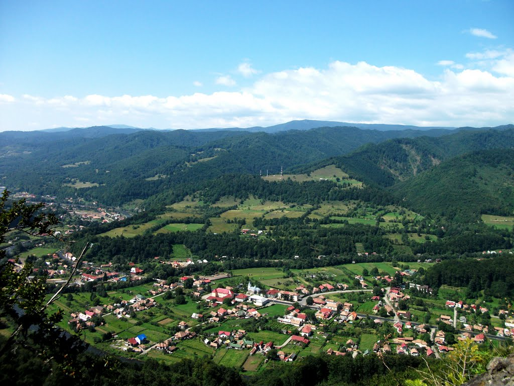
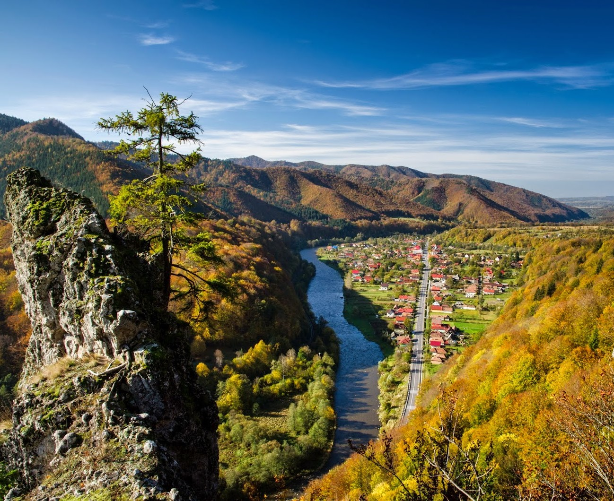
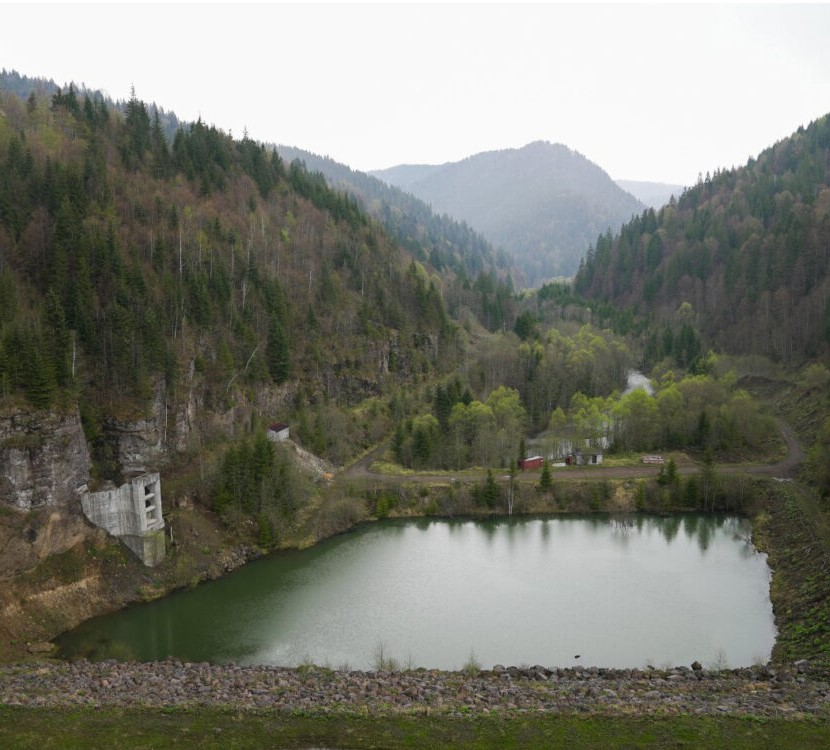
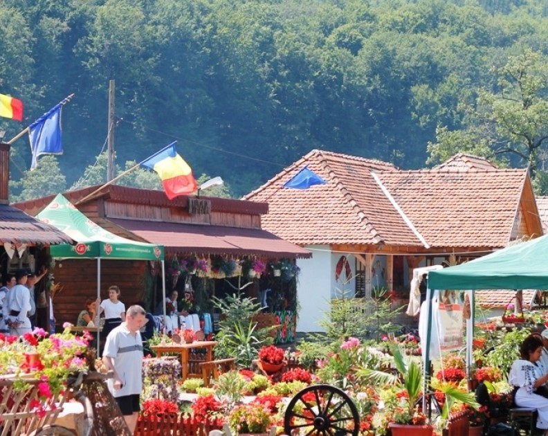

Descopera peisaje de vis in aceasta comuna situata langa raul Mures

Locuri pe care trebuie sa le vizitezi neaparat



Daca esti pasionat de plimbari prin natura atunci Varful Listes este perfect pentru tine. De pe acest varf se poate observa frumusetea intregului sat si este un loc perfect pentru un picnic.
Alta locatie perfecta pentru pasionatii de plimbari prin natura este Barajul Rastolita. Aceasta locatie este situata intre munti si are o frumusete deosebita.
Daca vizitezi Rastolita in timpul verii vei avea ocazia sa vizitezi Festivalul Vaii Muresului, festival unde se aduna multe localitati care isi prezinta traditiile.
Rastolita este un loc foarte frumos care merita vizitat. Daca vrei sa afli mai multe despre Rastolita click aici.